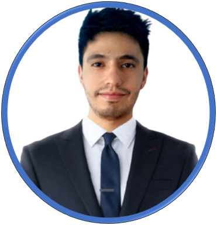

Richar Jhoseph Castañeda Cañon
Ingeniero de Sistemas
Perfil Profesional
Profesional con más 5 año de experiencia en al área de soporte técnico y atención al cliente, con capacidad de resolución de problemas, liderazgo, coordinación y manejo de personal.
Me esfuerzo por cumplir mis metas y realizar un trabajo completo destacando en mis actividades diarias, buscando siempre la mejor solución óptima y mejoramiento de los procesos.
Siempre interesado por aprender cosas nuevas en el ámbito tecnológico y personal.
Interesado en el desarrollo WEB, full stack, actualmente realizando cursos para mejorar mi aprendizaje.
Datos personales
Fecha de nacimiento: 15 de octubre de 1995
Lugar de nacimiento: Bogotá (D.C)
Contactos
- Número celular: 3123879072
- Email: rijhoseph1995@gmail.com
- Dirección de residencia: Manzana O1 Casa# 7 Barrio Villas de Granada-Meta
Estudios Académicos
Segundaria
Institución Educativa Valentín García
Bachiller técnico
2012
Otros Estudios
Instituto nacional de aprendizaje SENA
Tecnólogo en mantenimiento de equipos de cómputo, diseño e instalación de cableado estructurado
2013-2015
Estudios formales
Universidad Abierta y a Distancia UNAD
Ingeniero de Sistemas ©
2017-2022
Eventos Académicos
Cursos
Conecte su empresa con el mundo a través de redes sociales
Cámara de Comercio de Bogotá
2018
Diplomado En Gerencia Integral De Empresas De Servicios
Politécnico Superior de Colombia
2017
Fundamentación De Ensamble Y Mantenimiento De Computadores Para Los Procesos De soporte Técnico
Experiencia laboral
RRM (Coordinador)
IBM de Colombia
Encargado de la gestión de servicios a nivel nacional de la plataforma de impresoras de clientes del Grupo Aval Garantizando el cumplimiento de los procedimientos internos y entrenamiento del personal técnico asignado. Realizar asignación y seguimiento de casos reportados por el cliente. Programar y monitorear los horarios de trabajo del personal asignado. Realizar documentación y cierre de incidentes y requerimientos dentro del tiempo establecido con el cliente.
Coordinación de solicitud de partes para solución d partes para solución de incidentes y manejo de inventario. Velar por el cumplimiento de los SLAs del cliente
Roles antes en IBM
Técnico de soporte en sitio
ACAO informática Brasil LTDA (Practica Sena)
Técnico soporte
2013-2015
Atención telefónica y gestión del correo electrónico.
Respuesta a problemas/consultas de los clientes.
Mantenimiento de equipos de cómputo, con horario para cada cliente de la empresa
Referencias laborales
Coordinado de Proyecto
IBM
Paolo Patricia Erizalde Parra
Cel: 3118032633
Referencias personales
Glados Cañon Martines (Madre)
Regente de Farmacia
Cel: 3132823244
Jeferson Stiven Pardo (Amigo)
Cel: 313 3717758
Carrera de Programacion
Estudio Programación por que me gusta mucho el mundo informático, quiero volverlo como parte de mi estilo de vida, poder trabajar desde cualquier parte del mundo, sin perder el contacto con mi diario vivía mi familia. Cada día aprender mas ser un experto en el tema, es mi sueño entender del mundo de la programación